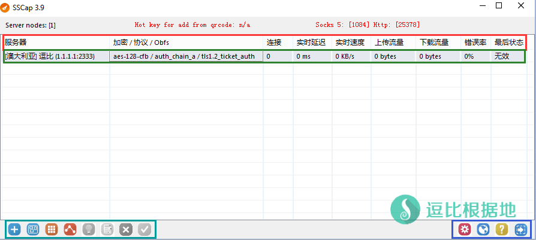
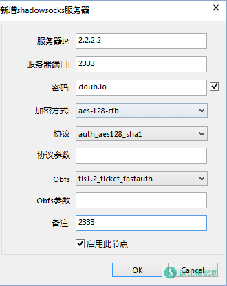
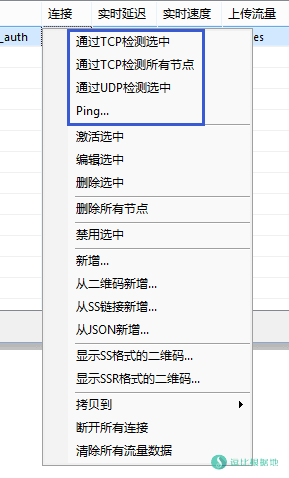
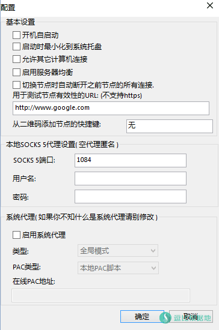
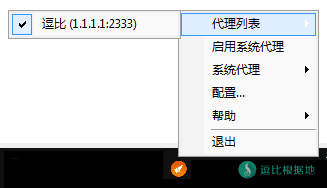
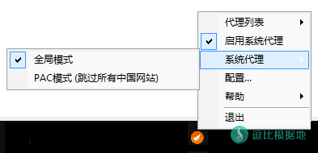

在Shadowsocks各分支中，有很多的Shadowsocks分支客户端，在Windows上面，大家可能只知道 Shadowsocks原版客户端和ShadowsocksR客户端，很少有人还知道这个SSCap客户端，这个客户端在2015年就已经出现了，截止到几天前这个客户端只支持Shadowsocks原版，所以有一些局限性，而前几天更新后支持了ShadowsocksR，那就很不错了。
SSCap是由 C++语言编写的Shadowsocks客户端。
相比其他Shadowsocks客户端，SSCap：
- 支持 Shadowsocks/ShadowsocksR协议和混淆
- 支持 检测Shadowsocks/ShadowsocksR 延迟和TCP/UDP可用性
- 支持 Windows xp/vista/win7/win8/win10 系统
- 等等 ...
而且SSCap似乎不是通过修改注册表的方式来修改系统代理设置，所以在一些锁定注册表不允许修改的环境下（例如网吧、学校），使用其他的Shadowsocks客户端会提示无法修改注册表，这时候就适合使用SSCap。
SSCap的作者同时还开发了Sockscap64和SSTap(最近开发的，用于把SS/SSR转为类VPN形式，不过还处于测试节点，成熟后我会写教程的)。
SourceForge项目地址：https://sourceforge.net/projects/sscap/
Github项目地址：https://github.com/tarolabs/sscap
Telegram 群组：https://t.me/tarolab
Telegram 频道：https://t.me/taronews
本文章也只是简单介绍一下，实际是SSCap客户端基本都是中文，大家操作几遍就能玩转了，我主要是告诉大家还有个客户端叫：SSCap
下载客户端
下载地址：SourceForge、Github、逗比云
下载并解压后会得到一个SSCap文件夹，里面的 SSCap.exe 即客户端启动文件。
config文件夹 中的 gui-config.json 为配置文件（默认没有启动客户端后会自动生成），也可以复制其他Shadowsocks客户端的 gui-config.json 文件到这个文件夹里，SSCap会自行适应。
使用说明
运行 SSCap.exe 文件后，可以看到如下界面：
界面介绍
顶部红框为 表头，右键可以选择显示/隐藏 某个列。
顶部绿框为 服务器列表，右键可以呼出操作菜单，可以测试节点/测试延迟/添加/修改/删除等操作。
底部左边青框为 服务器操作按钮，功能分别是 手动添加 / 从二维码添加 / 从json格式配置文本添加 / 从SS/SSR链接添加 / 激活服务器 / 编辑服务器 / 删除服务器 / 检测服务器。
底部右边蓝框为 客户端相关配置和信息按钮，分别是 配置 / 帮助 / 关于 / 退出(关闭客户端) 。

添加服务器账号
在通过左下角的 第一个按钮[+] 或 服务器列表右键点击 新增... 选项后，会出现如下窗口，按照自己的账号来添加吧，添加完点击 OK 按钮。

其他说明
想要测试账号可用性可以 右键选中 你要测试的服务器账号，并点击弹出菜单中的
通过TCP检测选中：只通过TCP检测当前选中的 节点账号是否可用。
通过TCP检测所有节点：通过TCP检测 所有节点账号是否可用。
通过UDP检测选中：只通过UDP检测当前选中的 节点账号是否可用（主要是用来检测这个账号的服务端是否开启了UDP转发）。
Ping...：调用系统CMD来测试延迟。
检测用的URL可以自定义，点击窗口右下角的 [齿轮]按钮，即可看到 [用于测试节点有效性的URL:（不支持https）]，修改下面的输入框内的 URL 即可。


启动代理
在上面乱七八糟的都配置完后，我们右键托盘图标，在弹出菜单的代理列表中选择你要使用的节点账号。
然后再点击 启动系统代理，最后再 系统代理中 选择 全局模式或PAC模式(跳过所有中国网站)。


本文章也只是简单介绍一下，实际是SSCap客户端基本都是中文，大家操作几遍就能玩转了，我主要是告诉大家还有个客户端叫：SSCap
转载请超链接注明：逗比根据地 » 支持批量检测 SS/SSR账号延迟和TCP/UDP可用性的客户端 —— SSCap
责任声明：本站一切资源仅用作交流学习，请勿用作商业或违法行为！如造成任何后果，本站概不负责！